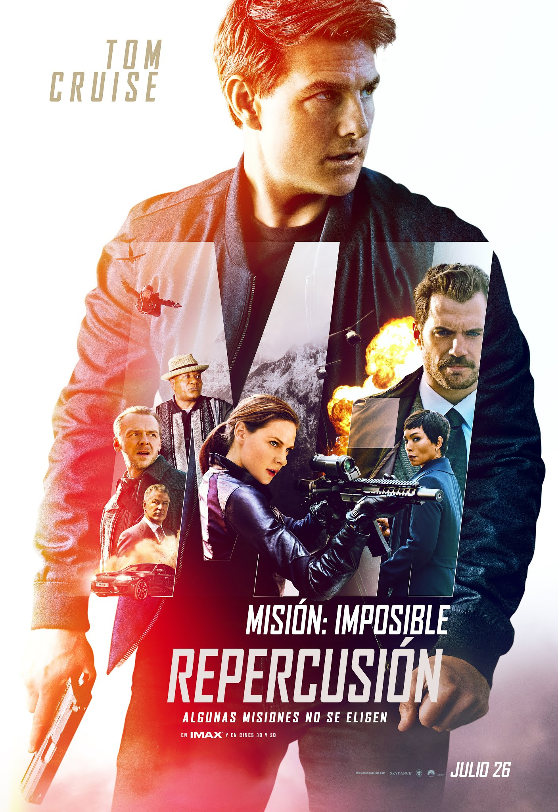

MISION IMPOSIBLE 7
Misión imposible: Repercusión en Hispanoamérica y como Misión imposible: Fallout en España, es una película de espías y acción estadounidense de 2018, escrita, coproducida y dirigida por Christopher McQuarrie. Es la sexta entrega de la serie de películas Misión imposible y está protagonizada por Tom Cruise, Rebecca Ferguson, Ving Rhames, Simon Pegg, Michelle Monaghan, Alec Baldwin y Sean Harris, junto con Henry Cavill, Vanessa Kirby y Angela Bassett, que se unen a la franquicia.